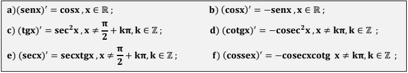
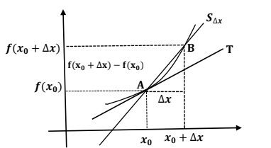
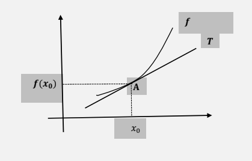

Derivada
Definição
A derivada de uma função y = f(x) mede como y muda quando x varia. Ela pode ser representada de três formas:
\[ f'( x) =\lim _{\Delta x\rightarrow 0}\frac{f( x+\Delta x) -f( x)}{\Delta x} \]
Onde \(f( x+\Delta x)-f( x)\) representa a variação de y quando o x muda por \(\Delta x\)
Quando uma Função é Derivável?
Derivadas Elementares - Função Constante
A função constante f(x) = k tem derivada zero para todo x real. Isso acontece porque:
\[ \displaystyle f'( x) =\lim _{\Delta x\rightarrow 0}\frac{\Delta y}{\Delta x}=\lim _{\Delta x\rightarrow 0}\frac{0}{\Delta x} =0 \]
Ou seja, A derivada de uma constante k é sempre 0. Na tabela de derivadas, isso é representado por (k)'=0.
Exemplo:
\(f(x)= 3\), logo, \(f(x) =0\)
Derivadas Elementares - Função Potência
A derivada da função potência \(f(x)=x^n\) (onde n é um número racional diferente de zero) segue uma regra simples
Se \(f(x)=x^n\), então a derivada é \(f'( x) =n.x^{n-1}\). Isso vale para qualquer n racional, desde que a função esteja definida.
Isso vale para qualquer n racional, desde que a função esteja definida.
Para n > 0 (números naturais):
A função \(f(x)=x^n\) é derivável, e sua derivada é:\(f'( x) =n.x^{n-1}\).
Para \(f(x)=\frac{1}{x^{n}}\) (ou \(x^{-n}\)):
A função \(f(x)=\frac{1}{x^{n}}\) para \(\displaystyle x\neq 0\), e sua derivada é:
\[ f'( x) =-n.x^{n-1} =\frac{-n}{x^{n+1}} \]
Exemplos:
\[ f'( x) =2.x^{2-1} \]
\[ f'( x)=2x \]
\[ f'( x) =\frac{1}{x^{1+1}} \]
\[ f'( x) =\frac{1}{x^2} \]
Derivadas Elementares - Função Exponencial e Logarítmica Natural
Para todo x real a função exponencial e é derivável e \((e^x)'=e^x\)
Para todo real x > 0, a função logaritmica natural, \(\displaystyle \ln \ x\), é derivável e \(\displaystyle (\ln \ x) '=\frac{1}{x}\), x > 0.
Derivadas Elementares - Funções Trigonométricas
As funções trigonométricas são deriváveis e valem as seguintes fórmulas de derivação:
Regras de Derivação
| Derivada da Multiplicação por uma Constante | \(( k.f( x)) '=\ k.f'( x)\) |
| Derivado da Soma de Funções | \(\displaystyle ( f( x) +g( x)) '\ =\ f'( x) +g'( x)\) |
| Derivado do Produto de uma função | Derivada da primeira vezes a segunda, mais a primeira vezes a derivada da segunda. \(\displaystyle ( f( x).g( x)) '\ =\ f'( x).g( x)+f( x).g '( x)\) |
| Derivada do Inverso de uma função | A derivada de \(\frac{1}{g( x)}\) é: \[ \displaystyle \left(\frac{1}{g( x)}\right) '=\ -\ \frac{g'( x)}{( g( x))^{2}} \] Isso significa que a derivada do inverso de uma função depende da derivada da função original. |
| Derivada do Quociente de uma função | \[ \displaystyle \left(\frac{f( x)}{g( x)}\right) '=\frac{f'( x) .g( x) -f( x) .g'( x)}{( g( x))^{2}} \] |
| Regra de Cadeia (Derivada de Função Composta) | Se \(y= f(g(x))\), onde \(u =g(x)\), a derivada de y em relação a x é: \[ \displaystyle \frac{dy}{dx} =\frac{dy}{du} .\frac{du}{dx} \] Ou seja, derivada da função externa vezes a derivada da função interna. |
Exemplos:
\(f(x) = 5x^2\)
\(f'(x) = 5.(2x^{2-1}) = 10x\)
\(f(x) = 3x^2\) e \(g(x) = 4x\)
\(3x^2+4x)'=3.(2x^{2-1}+4.(1x^0) = 6x+4\)
\(f(x) = x^2\) e \(g(x) = x+2\)
\(\displaystyle ( f( x).g( x)) '\ =\ f'( x).g( x)+f( x).g '( x)\)
\(((x^2).(x+2))'=2x.(x+2)+x^2.(1x^0+0)= 2x^2+4x+x^2 = 3x^2+4x\)
\(\displaystyle \left(\frac{1}{g( x)}\right) '=\ -\ \frac{g'( x)}{( g( x))^{2}}\)
\(\displaystyle \left(\frac{1}{x^2+1}\right) '=\ - \frac{(x^2+1)'}{(x^2+1)^{2}}= -\ \frac{2x+0}{(x^2+1)^{2}}=\ -\frac{2x}{(x^2+1)^{2}}\)
\(\displaystyle \left(\frac{f( x)}{g( x)}\right) '=\frac{f'( x) .g( x) -f( x) .g'( x)}{( g( x))^{2}}\)
\(f(x) = x^3\) e \(g(x) = x + 1\)
\(\displaystyle \left(\frac{x^3}{x+1}\right) '=\frac{3x^2 .(x+1) -x^3 .(1x^0+0)}{(x+1)^{2}}=\frac{3x^3+3x^2-x^3 }{(x+1)^{2}}=\frac{2x^3+3x^2}{(x+1)^{2}}\)
Função Composta:
\[ y = (2x + 3) ^ 4 \]
1. Defina \(u = (2x + 3)\), então \(y = u ^ 4\)
2. Calcule a derivada de \(y = (u ^ 4)\)
\[ (y') = 4u ^ 3 \]
3. Calcule a derivada de \(u= (2x + 3)\):
\[ (2x + 3)' = 2x ^ 0 + 0 = 2 \]
4. Multiplique as derivadas: \(4u ^ 3.2 = 8u ^ 3\)
5. Substitua u de volta:
\[ 8. (2x + 3) ^ 3 \]
Interpretação Geométrica da Derivada: Reta Tangente ao Gráfico de uma Função
Interpretação da Derivada no ponto \(x_{0}\)
Para traçar a reta tangente \(T\) ao gráfico de \(y = f(x)\) no ponto \(A = (x_{0},f(x_{0}))\), precisamos de mais um ponto. Damos um acréscimo \(\Delta x\) a \(x_{0}\) e consideramos a reta secante \( S_{\Delta x}\) que passa pelos pontos \(A = (x_{0},f(x_{0}))\) e \(B = (x_{0} + \Delta x,f(x_{0} + \Delta x))\). O coeficiente angular da reta secante é:
\[ mS_{\Delta x} =\frac{f( x_{0} +\ \Delta x) -f( x_{0})}{\Delta x} \]
Quando \( \Delta x \rightarrow 0 \), as retas secantes \( S_{\Delta x}\) se aproximam da reta tangente \(T\), e seus coeficientes angulares \( mS_{\Delta x}\) tendem ao coeficiente angular \(mT\) da reta tangente \(T\). Assim:
\[ m_{T} =\ \lim _{\Delta x\rightarrow 0} m_{S\Delta x} =\lim _{\Delta x\rightarrow 0}\frac{f( x_{0} +\ \Delta x) \ -\ f( x_{0})}{\Delta x} =\ f'( x_{0}) \]
Portanto, a derivada \(f'( x_{0}\)) é o coeficiente angular da reta tangente ao gráfico de \(y = f(x)\) no ponto \(x_{0}\). A equação da reta tangente que passa por \((x_{0},f(x_{0}))\) com coeficiente angular \(m_{T} = f'(x_{0})\) é:
\[ y-f( x_{0}) =f'( x_{0})( x-x_{0}) \]
Exemplo:
Encontrar a equação reduzida da reta \(T\), tangente ao gráfico da função \(f( x) =\frac{x^{2}}{2x-1}\), no ponto de tangência \(A = (2,f(2))\):
1. Calcule \(f(2)\):
\[ f( 2) =\frac{( 2)^{2}}{2.( 2) -1} =\frac{4}{4-1} =\frac{4}{3} \]
Portanto, o ponto de tangência é \(A=\ \left( 2,\frac{4}{3}\right)\).
2. Calcule a derivada \(f'(x)\):
\[ f( x) =\frac{x^{2}}{2x-1} \]
Usando a regra do quociente:
\[ f'( x) =\frac{( 2x)( 2x-1) -x^{2} .2}{( 2x-1)^{2}} =\frac{4x^{2} -2x-2x^{2}}{( 2x-1)^{2}} =\frac{2x^{2} -2x}{( 2x-1)^{2}} \]
3. Calcule \(f'(2)\):
\[ f'( 2) =\frac{2.( 2)^{2} -2.( 2)}{( 2.2-1)^{2}} =\frac{2.( 4) -4}{( 4-1)^{2}} =\frac{8-4}{( 3)^{2}} =\frac{4}{9} \]
4. Escreva a equação da reta tangente:
\[ y-\frac{4}{3} =\frac{4}{9}( x-2) \]
Simplificando:
\[ y=\frac{4}{9} x-\frac{8}{9} +\frac{4}{3} =\frac{4}{9} x+\frac{4}{9} \]
A equação reduzida da reta tangente \(T\) é:
\[ y = \frac{4}{9} x+\frac{4}{9} \]
Função Diferencial
A derivada \(f'(x_{0})\) representa o coeficiente angular da reta tangente \(T\) ao gráfico de \(y = f(x)\) no ponto \((x_{0},f(x_{0}))\). A notação \(\frac{dy}{dx}=f'(x_{0})\) indica que a derivada é a razão entre a variação infinitesimal de \(y(dy)\) e a variação infinitesimal de \(x(dx)\). Assim, podemos escrever:
\[ dy = f'(x_{0}).dx \]
Onde:
A diferencial \(dy\) é uma aproximação linear para \(\Delta y\), e o erro \(E = \Delta y - dy \) diminui à medida que \(dx\) se torna menor. Em geral, a diferencial de uma função \(y = f(x)\) é dada por:
\[ dy = f'(x).dx \]
Exemplo:
As arestas de um cubo medem 2 metros e são aumentadas para 2,001 mestros. Calcule a variação aproximada do volume do cubo usando a diferencial da função volume.
1. A função volume do cubo é \(V(x) = x^3\), onde é \(x\) o comprimento da aresta.
2. Calcule a derivada \(V'(x)\):
\[ V'(x) = 3x^2 \]
Para \(x = 2\) metros e \(dx = 0,001\) metros (aumento nas arestas), calcule a diferencial \(dV\)
\[ dV= V'(2).dx = 3.(2)^2.0,001 = 12.0,001 = 0,012m^3 \]
4. Portanto, a variação aproximada do volume é \(0,012m^3\)
Interpretação da Derivada como Velocidade
A derivada pode ser interpretada como a velocidade instantÂnea de um objeto em movimento.
Isso funciona da seguinte forma:
1. Posição \((s(t))\):
A função \((s(t))\) representa a posição de um objeto no instante \(t\)
2. Velocidade Média \(V_{m}\):
A velocidade média entre dois instantes \(t\) e \(t + \Delta t\)
\[ V_{m} =\ \frac{s( t+\Delta t) -s( t)}{\Delta t} \]
Isso mede a taxa média de vaiação da posição no intervalo do tempo \(\Delta t\)
3. Velocidade Instantânea \(v(t)\):
A velocidade instantânea no instante \(t\) é a derivada da posição em relação ao tempo
\[ v( t) =\frac{ds}{dt} =\ s'( t) =\lim _{\Delta t\rightarrow 0}\frac{s( t+\Delta t) -s( t)}{\Delta t} \]
Isso mede a taxa de variação da posição em um instante específico.
Exemplo:
Um móvel tem sua posição dada por \(s( t) =\frac{t}{t^{2} +1}\) (em metros), onde \(t\geq 0\) é o tempo em segundos.
a) Calcule a velocidade média entre os instantes \(t = 2\) e \(t = 4\)
1. Calcule \(s(2)\):
\[ s( 2) =\frac{2}{( 2)^{2} +1} =\frac{2}{5} \ =\ 0,4\ m \]
2. Calcule \(s(4)\):
\[ s( 4) =\frac{4}{( 4)^{2} +1} =\frac{4}{9} \ \approx 0,235\ m \]
3. Calcule a velocidade média:
\[ V_{m} =\ \frac{s( 4) -s( 2)}{4-2} =\frac{0,235-0,4}{2} =\frac{-\ 0,165}{2} =-0,0825\ m/s \]
O sinal negativo indica que o móvel está se movendo na direção oposta.
b) Calcule a velocidade no instante \(t = 4\)
1. Calcule a derivada de \(s(t)\):
\[ s( t) =\frac{t}{t^{2} +1} \]
Usando a regra do quociente:
\[ s'( t) =\frac{( 1)\left( t^{2} +1\right) -t( 2t)}{\left( t^{2} +1\right)^{2}} =\frac{t^{2} +1-2t^{2}}{\left( t^{2} +1\right)^{2}} =\frac{-t^{2} +1}{\left( t^{2} +1\right)^{2}} \]
2. Calcule a derivada de \(s'(4)\):
\[ s'( 4) =\frac{-( 4)^{2} +1}{\left( 4^{2} +1\right)^{2}} =\frac{1-16}{( 17)^{2}} =\frac{-15}{289} \ \approx \ -0,052\ m/s. \]
O sinal negativo que o móvel está se movendo na direção oposta no instante \(t = 4\).
Derivadas Sucessivas
As derivadas sucessivas são as derivadas de uma função aplicadas várias vezes. Cada nova derivada é calculada a partir da derivada anterior. Aqui está como funciona:
1. Primeira Derivada \((f'(x))\):
É a derivada da função original \(f(x)\).
2. Segunda Derivada \((f''(x))\):
É a derivada da primeira derivada \(f''(x) = (f'(x))'\).
3. Terceira Derivada \((f'''(x))\):
É a derivada da segunda derivada \(f'''(x) = (f''(x)')\).
4. Derivada de Ordem \(n\left( f^{( n)}( x)\right)\):
É a derivada da derivada de ordem \(n-1:\ f^{( n)}( x) =\ \left( f^{( n-1)}( x)\right) '\)
Exemplo:
Considere a função \(f(x)= 3x^4-2x^3-6x^2-7x+4\)
Calcule:
a)\(f'(x)\)
\[ f'(x) = 3.(4x^3)-2(3x^2)+6(2x)-7(1x^0)+0 \] \[ f'(x) = 12x^3 -6x^2 +12x-7 \]
b)\(f''(x)\)
\[ f''(x) = 12.(3x^2)-6(2x) + 12(1x^0)-0 \] \[ f''(x) = 36x^2- 12x + 12 \]
c)\(f'''(x)\)
\[ f'''(x) = 36(2x) - 12(1x^0) + 0 \] \[ f'''(x) = 72x - 12 \]
d)\(f^{( 4)}( x)\)
\[ f^{( 4)}( x) = 72(1x^0) - 0 \] \[ f^{( 4)}( x) = 72 \]
Polinômio de Taylor
O Polinomio de Taylor é uma forma de aproximar uma função \(f(x)\) usando um polinomio. Ele é ütl quando queremos estimar o valor de uma função complexa perto de um ponto za usando apenas operações simples (como adição, multiplicação e potência)
1. Ideia Principal
O Polinômio de Taylor "imita" o comportamento da função \(f(x)\) perto de um ponto \(x_{0}\)
Quanto maior a ordem do polinomio (ou seja, quanto mais termos usarmos), melhor será a aproximação
Fórmula Geral:
O Polinômio de Taylor de ordem \(n\) para \(f(x)\) no ponto \(x_{0}\) é:
\[ f( x) \ \approx f( x_{0}) \ +\ f'( x_{0})( x-x_{0}) +\frac{f''( x_{0})}{2!}( x-x_{0})^{2} +\frac{f'''( x_{0})}{3!}( x-x_{0})^{3} +...+\frac{f^{( n)}( x_{0})}{n!}( x-x_{0})^{n} \]
\(f(x_{0})\): Valor da função no ponto \(x_{0}\)
\((x-x_{0})^k\): Potência que mede a distância entre \(x\) e \(x_{0}\)
\(k!\): Fatorial de \(k\) (exemplo: \(3! = 3.2.1 = 6)\).
Exemplo:
Aproximar a função \(f(x) = e^x\)(exponencial) usando um Polinômio de Taylor de ordem 3 no ponto \(x_{0} = 0\).
1. Calcule as derivadas de \(f(x) = e^x\)
\(f(x) = e^x\)
\(f'(x) = e^x\)
\(f''(x) = e^x\)
\(f'''(x) = e^x\)
2. Avalie as derivadas no ponto \(x_{0} = 0\).
\(f(0) = e^0 = 1\)
\(f'(0) = e^0 = 1\)
\(f''(0) = e^0 = 1\)
\(f'''(0) = e^0 = 1\)
3. Monte o Polinômio de Taylor de ordem 3
Substitua os valores na fórmula:
\[ f( x) \ \approx f( 0) \ +\ f'( 0)( x-0) +\frac{f''( 0)}{2!}( x-0)^{2} +\frac{f'''( 0)}{3!}( x-0)^{3} \]
Simplificando:
\[ f( x) \ \approx \ 1\ +\ 1x\ +\ \frac{1}{2} x^{2} +\ \frac{1}{6} x^{3} \]
Portanto:
\[ f( x) \ \approx \ 1\ +\ x\ +\ \frac{x^{2}}{2} +\ \frac{x^{3}}{6} \]
Compare com o valor real de \(e^x\)
Para \(x = 0,5\)
Aproximação
\[ f( 0,5) \ \approx \ 1\ +\ 0,5\ +\ \frac{( 0,5)^{2}}{2} +\ \frac{( 0,5)^{3}}{6} =\ 1+\ 0,5\ +\ 0,125\ +\ 0,0208\ =\ 1,6458 \]
Valor real \(e^{0,5} \approx \ 1,6487\)
As Regras de L'Hospital
As Regras de L'Hospital são usadas para calcular limites que resultam em indeterminações do tipo \(\frac{0}{0}\) ou \(\frac{\infty }{\infty }\). Essas regras dizem que, se duas funções \(f(x)\) e \(g(x)\) são deriváveis e tendem \(0\) ou \(\infty \) quando \(x\) se aproxima de um ponto \(p\), então o limite do quociente \(\frac{f( x)}{g( x)}\) é igual ao limite do quociente das suas derivadas \(\frac{f'( x)}{g'( x)}\), desde que esse último limite exista. Essa regra pode ser aplicada em várias situações, como quando \(x\) tende a um número finito, a infinito, ou a um lado específico de um ponto.
Exemplo:
Calcule o limite \(\lim _{x\rightarrow 2}\frac{x^{3} -8}{x^{2} -4}\)
Verificação da indeterminação:
\[ \lim _{x\rightarrow 2}\frac{x^{3} -8}{x^{2} -4} =\frac{8-8}{4-4} =\frac{0}{0} \]
Aplicação da Regra de L'Hospital:
Cálculo do limite das derivadas:
\[ \lim _{x\rightarrow 2}\frac{3x^{2}}{2x} =\frac{3.( 2)^{2}}{2.( 2)} =\frac{3.4}{4} =3 \] \[ \lim _{x\rightarrow 2}\frac{x^{3} -8}{x^{2} -4} \ =\ 3 \]
Máximos e Mínimos
A aplicação da derivada permite identificar pontos de máximos e mínimos de uma função em intervalo J.
Conceitos Fundamentais:
Critério de Crescimento e Decrescimento:
Classificação dos Extremos
Pontos Críticos
Exemplo
Dada a função \(f(x) = x^3 -3x^2 + 4:\)
a)Estudar o crescimento e decrescimento da função.
b)Identificar os pontos de máximo e mínimos locais e globais.
1.Encontrar a derivada da função.
\[ f'(x) = 3x^2 -3.(2x) + 0 \] \[ f'(x) = 3x^2 -6x \]
2.Encontrar os pontos críticos (onde \(f'(x) = 0\))
\[ 3x^2-6 = 0 \] \[ 3x(x-2)= 0 \] \[ 3x_{1} = 0 \] \[ x_{1} \ =\ \frac{0}{3} \] \[ x_{1} = 0 \] \[ x_{2} -2 = 0 \] \[ x_{2} = 2 \]
Os pontos críticos são \(x = 0\) e \(x = 2\)
3.Estudar o sinal de derivada para determinar crescimento e decrescimento
\[f'(1) = 3(-1)-6(-1) = 9 > 0\]
A função é crescente em \(( -\infty ,0)\).
\[f'(1) = 3(1)^2 -6(1) = -3 < 0\]
A função é decrescente em \(0,2\).
\[f'(3) = 3(3)^2-6(3) = 27-18 =9 >0\]
A função é crescente em \((2,+\infty )\).
4.Usar a segunda derivada para classificar os pontos críticos.
\[ f''(x) = 3.(2x) -6(1x^0) \] \[ f''(x) = 6x -6 \]
\[f''(0) = 6.0 - 6 = -6 < 0\]
Portanto, \(x = 0\) é um máximo local
\[f''(2) = 6.2 - 6 = 12 -6 = 6 > 0\]
Portanto, \(x=2\) é um mínimo local.
Verificar máximos e mínimos globais
Respostas:
A função é crescente em \(( -\infty ,0)\) e \(2,+\infty \), e decrescente em \(0,2\).
A função tem: